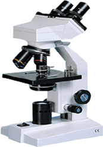

LDM
Manual de Operación del Microscopio

1.- Operación
- Como el microscopio es un instrumento de precisión, siempre hay que tener cuidado en su uso, evitando impactos o movimientos bruscos durante su transportación.
- No debe ser expuesto directamente al sol. Se debe mantener en un lugar limpio y seco. Evitar la exposición a altas temperaturas y movimientos agudos. Ambiente requerido: Temperatura: 040ºC, humedad relativa máxima: 85%.
- Evita impactos ya que afectan la definición de la imagen, no dejar huellas digitales sobre la superficie de los lentes.
- Antes de usar asegúrese que el voltaje de la fuente de poder corresponda con el voltaje suministrado.
2.- Mantenimiento
- Las superficies de vidrio siempre deben mantenerse limpias. El polvo sobre las superficies ópticas debe ser retirado por medio de un soplador manual o limpiado suavemente con una tela para lentes. Cuidadosamente limpie el aceite o huellas digitales de los lentes con una tela humedecida con una pequeña cantidad de la mezcla alcohol- éter en una proporción 3:7.
- No use soluciones orgánicas para limpiar las superficies de los otros componentes. Especialmente las partes plásticas deben ser limpiadas con un jabón neutro.
- Después de usar, cubra el microscopio con el cubre polvos provisto, y manténgalo en un lugar seco y limpio para prevenir la oxidación.
El microscopio es alojado en un contenedor de espuma moldeada.
Primero saque el contenedor de espuma de la caja de cartón y póngala en un lado. Abra el contenedor cuidadosamente y no permitas que los artículos ópticos caigan, evitando que se dañen. Revisa cuidadosamente que el brazo y los accesorios se encuentren en buen estado.
Coloca el objetivo en el revolver del microscopio de la magnificación menor a la mayor, en sentido contrario de las manecillas del reloj.
Inserte el ocular en el tubo del ocular
Coloca una muestra a ser estudiada sobre el portaobjetos, y este colócalo en las pinzas de la platina.
Si usamos una platina movible, coloca la muestra en las pinzas de la platina. Ajusta la posición por medio de las perillas correspondientes de la platina
Únicamente para el microscopio con espejo, gira el espejo hasta obtener un campo iluminado.
Para el microscopio construido con iluminador eléctrico integrado, inserte la clavija de el cable principal en el enchufe del suministro de energía y gira el interruptor de la luz hasta obtener una muestra iluminada.
Ajuste con la perilla de enfoque grueso, acercando la muestra a foco. Luego ajusta el limite de acercamiento con el tornillo limitador, evitando el impacto entre el objetivo y el portaobjetos. Ajusta con la perilla de enfoque fino, hasta obtener una imagen definida y clara.
Para microscopios con cabeza binocular, debemos hacer algunos ajustes más.
Toma la superficie de la cabeza del microscopio y desliza la placa de los tubos oculares para el ajuste de la distancia interpupilar, hasta que sea posible observar a través de ambos oculares vistos al mismo tiempo la luz del campo de observación.
Después de terminar el ajuste interpupilar, mira el valor de la graduación en la mitad de la superficie de la cabeza. Gira el anillo de ajuste de dioptrías según el valor de la graduación observado en la superficie de la cabeza.
Si la dioptría de los ojos no es la misma, el microscopio de cabeza binocular BM-100 FL tiene una función de compensación. Gira el revolver para elegir el objetivo 4x, y usa el ojo izquierdo para observar el objetivo izquierdo. Haz un ajuste grueso y enfoca correctamente. Usa el ojo derecho para observar el objetivo derecho. Obtén una imagen clara girando el anillo dioptrías hacia arriba o abajo.
Para el microscopio con condensador Abbe, mueve el condensador Abbe hacia arriba o abajo hasta obtener una imagen con un brillo adecuado para su observación.
Para el microscopio con diafragma de disco, gira el diafragma para seleccionar una abertura, y obtener un contraste adecuado. Para el microscopio con diafragma de iris, ajusta la apertura del diafragma de iris hasta obtener un contraste adecuado.
Gira el revolver para elegir un objetivo. El objetivo seleccionado debe estar perpendicular al portaobjetos. Generalmente, primero usa el objetivo 4x para mostrar una imagen con estructuras generales. Después usa el objetivo con mayor resolución para mostrar detalles más pequeños.
Cuando usas el objetivo 100 xR, una pequeña cantidad de aceite de inmersión debe ponerse entre el objetivo y el cubreobjetos. Además cuando el condensador Abbe esta sobre el brazo, el objetivo 100xR puede ser usado
Antes de cambiar la lámpara, primero desconecta el enchufe del suministro eléctrico y espera a que la lámpara se enfríe para evitar quemaduras. Después desatornilla la base del equipo en dirección contraria al sentido de las manecillas del reloj e inserta una nueva lámpara y atornilla la base.
| Tipo | Amplificación | Apertura numérica(N.A) | Medio |
Distancia focal (mm) | Amplificación (color del anillo) |
| 4x | 0.10 | Aire | 45 | Rojo | |
| DIN | 10x | 0.25 | Aire | 45 | Amarillo |
| Objetivo | 40x | 0.65 | Aire | 45 | Azul claro |
| Acromático 195 mm | 60x | 0.85 | Aire | 45 | Azul profundo |
| 100x | 1.25 | Aceite | 45 | Blanco |
Ocular
| Tipo | Campo amplio | Huygens | |||||
| Amplificación | 10x | 15x | 20x | 5x/6x | 10x | 12.5x | 15x/16x |
| Campo de observación (mm) | φ18 | φ13 | φ11 | φ15 | φ12 | φ10 | φ8 |
Parámetros
(1) Amplificación total 20x-1600x
(2) Campo de observación φ0.08-4.5mm
(3) Longitud del tubo mecánico 160 mm
(1) Amplificación total= (amplificación del objetivo)x (amplificación del ocular )
(2)Campo de observación=(línea del campo de observación del ocular (max),seleccionado)/(amplificación del objetivo seleccionado)
(3) N.A= nxsinα N.A es un parámetro muy importante que señala las características del objetivo y condensador. La "n" es el índice de refracción del medio (aire o aceite de inmersión) entre el objetivo y la muestra. La "α" es la mitad del ángulo de apertura. Cuando N.A es grande, la resolución de el objetivo también es grande
(4) Longitud del tubo mecánico: Es la distancia entre el hombro del objetivo y el hombro de el ocular
| Síntoma | Causa | Solución |
| Óptica | ||
| (1) Un lado del campo de observación esta oscuro o no se ve | El revolver no esta en la posición correcta | Gira el revolver a la posición correcta |
| Manchas o polvo se ha acumulado sobre el condensador, objetivo, ocular, base , lentes | Limpia los lentes | |
| (2) Manchas o polvos son observadas en el campo de observación |
La muestra tiene manchas acumuladas | Limpie la muestra |
| Los lentes tienen manchas acumuladas | Limpie los lentes | |
| (3) Imagen no clara | LA muestra no tiene cubre objetos | Coloca el cubreobjetos |
| El cubreobjetos no es estándar | Usa cubreobjetos estándar con un espesor de 0.17 mm | |
| La muestra esta hacia abajo | Colócalo correctamente | |
| El aceite de inmersión se ha acumulado en el objetivo seco | Limpiarlo | |
| No se usa aceite de inmersión para el objetivo 100x | Use aceite de inmersión | |
| Burbujas de aire en la inmersión | Libere las burbujas de aire | |
| Uso incorrecto del aceite de inmersión | Úselo correctamente | |
| La abertura no es del tamaño adecuado | Ajuste el diafragma de iris | |
| Existe polvo acumulado en el lente | Límpielo | |
| El condensador no está en posición recta | Ajuste el condensador | |
| (4) Una de los lados de la imagen no es clara o se mueve al intentar enfocar | Uno de los lados del portaobjetos no se ha fijado | Fijar con las pinzas de la platina |
| El revolver no se encuentra en una posición recta | Ajustar el revolver hasta una posición recta | |
| (5) El campo de visión no es suficientemente Brillante | El iris del diafragma no es suficientemente grande | Ajuste el iris del diafragma |
| El condensador no se encuentra en posición recta | Ajuste el condensador | |
| Polvo o muestra está acumulada en el condensador objetivo u oculares | Limpie los lentes | |
| (6) La imagen no es de color real | No se está usando filtro | Use el filtro correcto |
| (7) La imagen no está enfocada al usar el objetivo de mayor aumento | El cubre objetos se encuentra colocado en forma invertida | Coloque el portaobjetos correctamente |
| El cubre objetos no es de tamaño estándar | Use un cubreobjetos de tamaño estándar 0.17 mm. | |
| (8) El objetivo toca el cubreobjetos cuando se hace girar el revólver | El cubreobjetos se encuentra en forma invertida | Coloque el portaobjetos correctamente |
| El cubre objetos no es de tamaño estándar | Use un cubreobjetos de tamaño estándar 0.17 mm. | |
| (9) la preparación no se mueve suavemente sobre la platina | La muestra no se ha fijado correctamente | Ajuste este correctamente |
| (10) El bulbo no Enciende | No hay suministro eléctrico | Verifique que el cable de suministro principal esté correctamente conectado |
| El bulbo no está correctamente insertado | Inserte correctamente el bulbo | |
| El bulbo se ha quemado | Reemplace el bulbo. | |
| El fusible se ha quemado | Reemplace el bulbo. | |
| (11) El bulbo se quema continuamente | El voltaje es alto | Use un suministro eléctrico adecuado |
| Se está usando un bulbo incorrecto | Reemplace el bulbo por uno correcto. | |
| (12) La intensidad luminosa del bulbo no es suficiente | El bulbo está por quemarse | Sustituya el bulbo |
| El cable no ha sido conectado correctamente | Conecte el cable de tomacorriente principal correctamente | |